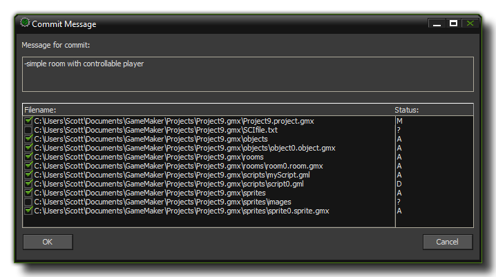
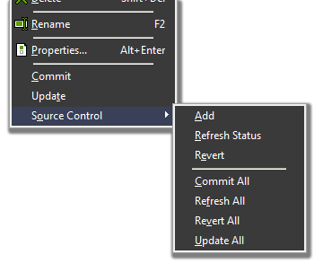

Using Source Control with GameMaker:Studio
Once you have everything setup correctly, GameMaker:Studio has its own set of tools for working with Source Control.
When working with your game in a source controlled setup, it is important that you follow the same steps all the time when creating, committing or reverting files in your game. To make things easier,
below you can find a brief overview for the three main proceedures that you will need to work with.
Adding New Files
When creating a new resource for your game (whether it be a room, a sprite or a time line), there are a couple of steps that you should always take to ensure that it is correctly versioned in your source
control repository:
- Create the resource and add the codes, objects, sprites etc...
- Save the project as the resources do not exist outside of the IDE (this is very important!).
- After saving the project, if you have not previously added any resources of this type to your repository for this project, right click on the resources root folder (so, for example, for a room it
would be the "Rooms "group in the resource tree), and select Source Control -> add. This only needs to be done once for each resource type.
- Right click on the new resource and also select Source Control -> add.
Now that you have added your resources to the repository, you can continue working on them as before, only now when you change something in them, you will have to use the "Commit" function to save
them to the repository, which is covered in the next section.
Important! Don't forget to save the game project before adding to the repository! And you only need to add each resource group once to the repository, and each subsequent resource
created in the group also only needs to be added only once after it has been created.
committing Files
Adding files (as explained above) only marks the files as "to be added" to your source control repository but doesn't actually save them there. So we must now commit the files in order for the repository
to hold these files. This step is very important as without it, your repository will not be up to date and you cannot use any of the source control features.
To commit files to the repository, follow these simple steps:
- Right click on the resource in the resource tree and select Source Control -> Commit All (you can also select Commit directly from the menu but that is for individual files and also we
have a lot more than just your new files to commit, as you will see).
- You will now get a commit dialog.

At the top you can add a message which will be logged along with your commit so that others can get a general idea of what you committed, and below this you will see all files that you are going to
commit.
- You will see that there are a lot of files in there, with most of them being the config files and images. You can choose just what to commit here by deselecting items in this dialog. The left panel shows
file names and the checkboxes for deselecting and selecting them, while the right panel shows you the status of the file (A=added, M=modified, D=deleted,
?=un-versioned).
- For this first commit, it is recommended that you do not deselect anything and commit everything, adding in as a message log something like "initial commit". Now press "Ok".
- You will now see in the compile messages it is adding and committing to the repository. This can take a while depending on your connection and the amount of files. The first commit can be quite lengthy
but you are looking for the message "Refreshing SVN Status...finished" which tells you that everything has been done and you can continue to work on the game.
Now that you have done your initial commit, the process should be more or less the same from now onwards, with you editing something, saving the project and then committing the change(s) to the repository, either
using the commit all or simple commit commands from the right click menu of the resource tree.
IMPORTANT! The project.gmx has to be committed manually by the user! Since the actual project.gmx does not appear in the resource tree, you should either commit it to source control
after committing any changed files from your game, or use the "commit all" command to commit it along with the rest of the changed files.
Reverting Changes
One of the principal uses for source control is the ability to "roll back" your game to a previous state and undo any changes that have been made. This can be of particular importance when you have added something
that breaks the game or have made some design changes that you want to go back and add in. in situations like this you will need to use the Revert option.
The following steps outline how to revert to the last committed version of a file stored in the repository:
- Right click on a resource you wish to revert and click "Source Control -> Revert".
- You will see a message appear in the compiler form at the bottom of the IDE saying "Reverted 'xxxxx.gmx'".
- Your resource is now back to the previously committed version.
Please note that this is not reversible, unless you are reverting from an already committed change. If you make some changes without doing a commit and then revert, once you have reverted there is no going back
to your non-committed version.
The GameMaker:Studio Interface
Once your game file has been added to your source control repository you will see that a new set of icons have been added to each resource on your resource tree. These are the GameMaker:Studio source
control indicators and are used to give you a graphic representation of the versions of each of your resources and while working on your project will look a bit like this :
 Obviously the exact icons you see will depend on your project and what you have been working on, but you still need to know what they all mean! The list below shows each one and explains their significance:
Obviously the exact icons you see will depend on your project and what you have been working on, but you still need to know what they all mean! The list below shows each one and explains their significance:
Updated : This shows that the resource is updated to the current version as stored in the repository.
Added : This icon means that you have created a new resource and it has to be added into the repository. This will happen
automatically when you save your progress.
Modified : When you change a resource in any way this icon will appear beside it to let you know that it is now different to
the last version in the repository.
Not Versioned : if you see this icon it means that the resource is not recognised by the SVN Client and should therefore
be added to the repository. There is an "add" command provided for this in the right-click menu from the resource tree.
Conflict : if you get this icon it means there is a conflict between two resources. this can only usually happen when two or
more people work on the same source and cannot be resolved through GameMaker:Studio. For that you will have to use your windows SVN Client to merge the two files or manually edit the *.gmx files.
You can work on your game as normal, creating, changing and adding resources as necessary knowing that these changes are only being done to your local copy of the game, not the versioned copy stored in
the repository. As mentioned in the sections above, a game with source control active also has an extra set of commands available from the right click menu of the resource tree. These new options deal with source
control and look like this:

As you can see there are two most common actions that need to be performed:
- Commit : This will commit the selected resource to the source control repository. If you have a folder selected then everyting in that folder will be committed, otherwise it will only commit
the selected resource. When you commit something you will also be prompted to add a comment where you can briefly explain what you have added or changed, and this will then be stored along with
the updated version of your project.
- Update : This will update the selected resource (or resources if you have a folder selected) in your local copy of the project from the repository. Any changes, additions or conflicts will now
show up in GameMaker:Studio
Below those two actions, you also have a further sub-menu titled "Source Control". There are further actions that you can perform listed here:
- Add : Normally you will have no need to use this action as GameMaker:Studio takes care of adding any new resources you create into the repository, but in some special cases it may
be neccessary to manually add a resource into the repository. When this happens you will get the "Not Versioned" icon showing that you need to use this action.
- Refresh Status : This simply refreshes the source control icons beside the resource (or resources if you have a folder selected) to reflect the current versioned status.
- Revert : With this action you revert the selected resource, or resources if you have a folder selected, to the last version you have updated to from the repository.
- Commit All : Commits everything into the repository. You will be prompted to save your work to the local copy before committing.
- Refresh All : This simply refreshes the status icons beside all the resources.
- Revert All : Use this to revert all changes that you have done back to the last version you have updated to from the repository.
- Update All : This will update all resources in your local copy of the project from the repository. Any changes, additions or conflicts will now show up in GameMaker:Studio.
It should be noted that there is no option to rename any resource as this is handled internally. So, when you have source control enabled and you rename (for example) a sprite, GameMaker:Studio will
automatically change and update your local copy of the project without any need for your intervention. these changes will then be added to the repository on the next commit.
© Copyright YoYo Games Ltd. 2013 All Rights Reserved